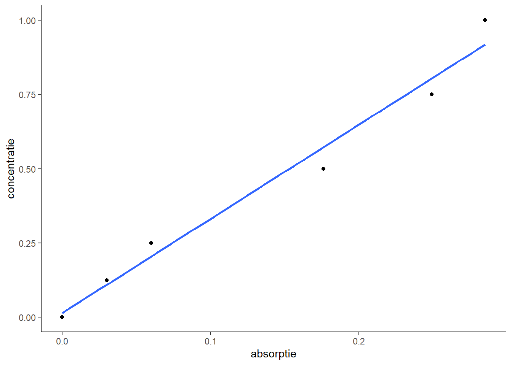

Lineaire regressie in R
Zoals in de vorige les al genoemd voer je een lineaire regressie uit met de functie lm(). Als voorbeeld de data van de ijklijn van het zetmeelpracticum uit jaar 1:
| absorptie | concentratie |
|---|---|
| 0.000 | 0.000 |
| 0.030 | 0.125 |
| 0.060 | 0.250 |
| 0.176 | 0.500 |
| 0.249 | 0.750 |
| 0.285 | 1.000 |
data importeren
Als de data in een Excelbestand staat, importeer je die met de functie read_excel uit de package readxl. Bijv.:
library(readxl)
ijklijn <- read_excel("ijklijn.xlsx")Figuur maken
Het is een goede gewoonte om de data eerst in een figuur weer te geven. Dan zie je in één oogopslag of het wel zin heeft de data te gebruiken voor je ijklijn:
library(tidyverse)
ijklijn %>%
ggplot(aes(absorptie, concentratie)) +
geom_point() +
geom_smooth(method = "lm", se=FALSE) +
theme_classic()
Met de regel geom_smooth(method="lm", se=FALSE) voeg je de regressielijn al toe. method="lm" geeft aan dat de lijn bepaald wordt via de functie lm(), dus het GLM.
Variantieanalyse uitvoeren
Maar wil je details van de uitgevoerde GLM bekijken, moet je alsnog de functie lm() uitvoeren:
fit <- lm(ijklijn$concentratie~ijklijn$absorptie)
summary(fit)##
## Call:
## lm(formula = ijklijn$concentratie ~ ijklijn$absorptie)
##
## Residuals:
## 1 2 3 4 5 6
## -0.01456 0.01528 0.04512 -0.07284 -0.05440 0.08141
##
## Coefficients:
## Estimate Std. Error t value Pr(>|t|)
## (Intercept) 0.01456 0.04238 0.344 0.748467
## ijklijn$absorptie 3.17205 0.24555 12.918 0.000207 ***
## ---
## Signif. codes: 0 '***' 0.001 '**' 0.01 '*' 0.05 '.' 0.1 ' ' 1
##
## Residual standard error: 0.0659 on 4 degrees of freedom
## Multiple R-squared: 0.9766, Adjusted R-squared: 0.9707
## F-statistic: 166.9 on 1 and 4 DF, p-value: 0.0002071Je krijgt dan flink wat output. In volgorde:
- Call: Het GLM dat je hebt uitgevoerd
- Residuals: De afwijkingen t.o.v. de ijklijn
- Coefficients: de parameterwaarden van het regressiemodel.
- intercept is het snijpunt met de y-as (b in de functie \(y=ax+b\)).
- ijklijn$absorptie is de richtingscoëfficient (dus a in de functie \(y=ax+b\)).
- Estimate is de geschatte parameterwaarde.
- Std. Error is de standaardfout van de geschatte parameterwaarde.
- t value is de t-waarde van de geschatte parameterwaarde (onder de H0 dat de parameterwaarde 0 is).
- Pr(>|t|) is de p-waarde van de tweezijdig tweezijdig uitgevoerde t-toets
- Signif. codes: de betekenis van de sterretjes (in welke klasse de p-waarde valt).
- Residual standard error: de geschatte standaarddeviatie van de residuën (het gemiddelde is altijd 0).
- Multiple R-squared: de R2, oftwel de fractie verklaarde variantie (hoe dichter bij 1 des te beter de fit).
- Adjusted R-squared: de R2, gecorrigeerd voor de complexiteit van je model.
- F-statistic: De berekende F-waarde.
- p-value: de p-waarde die volgt uit de F-toets.
Voor meer details, zie de volgende link